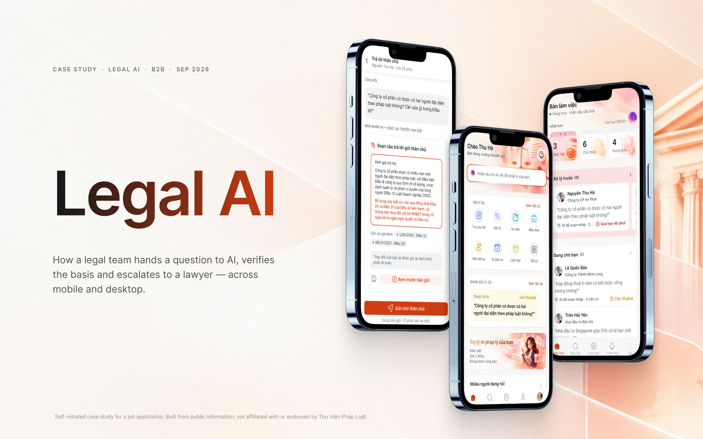
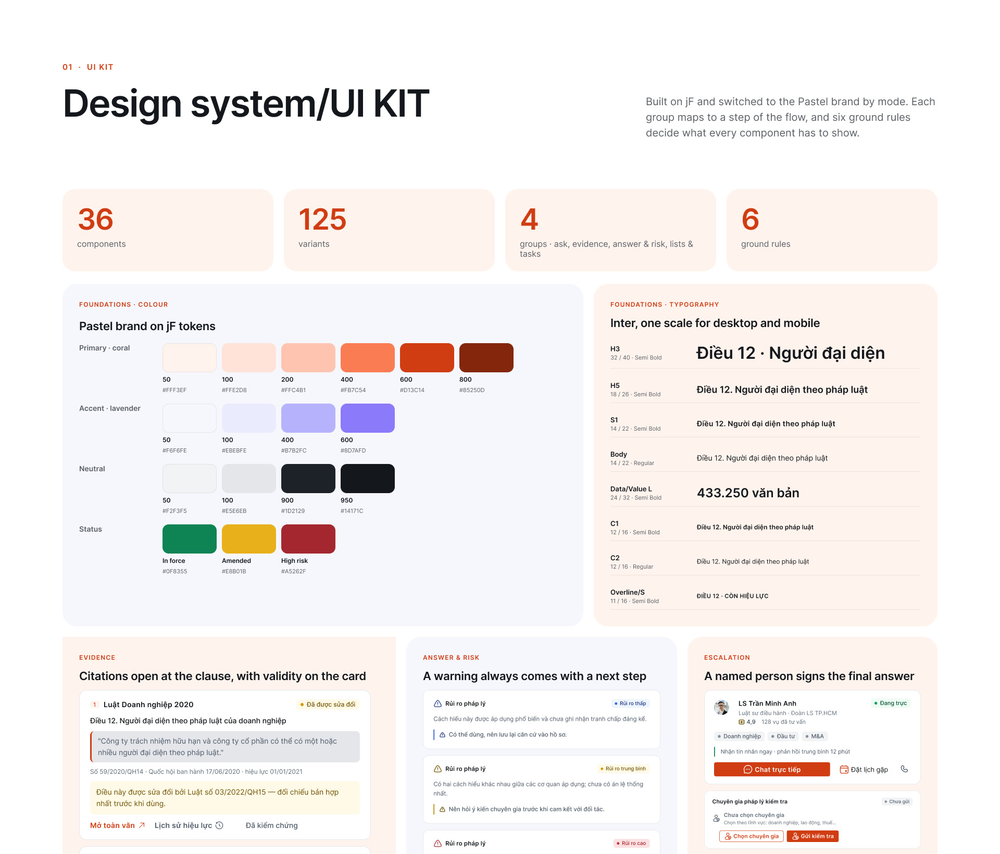
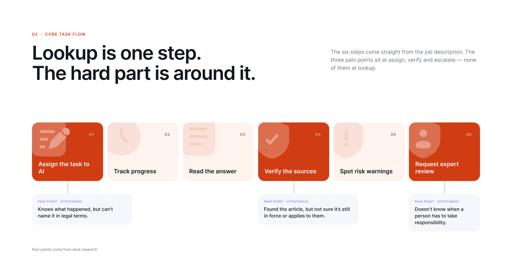
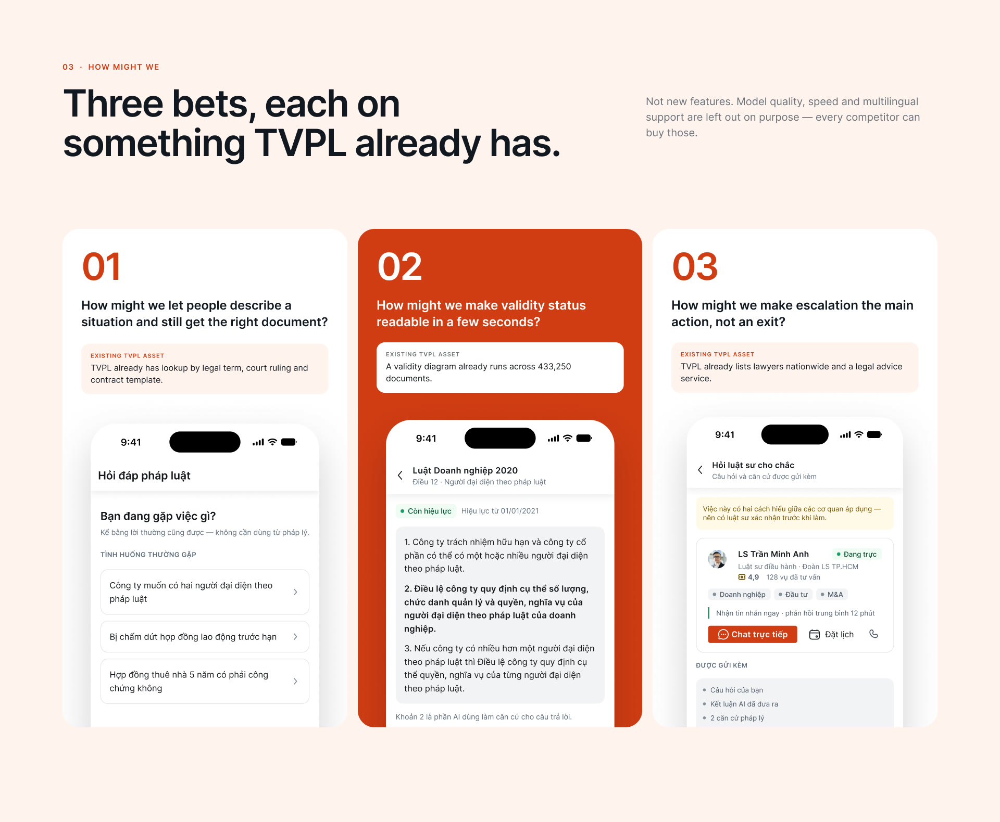
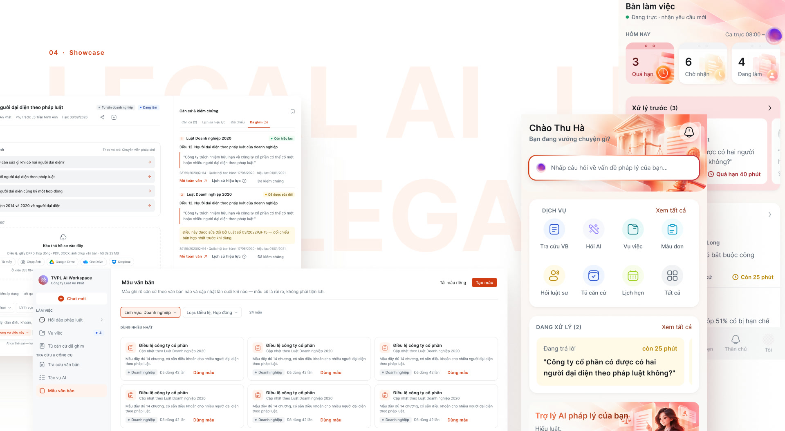
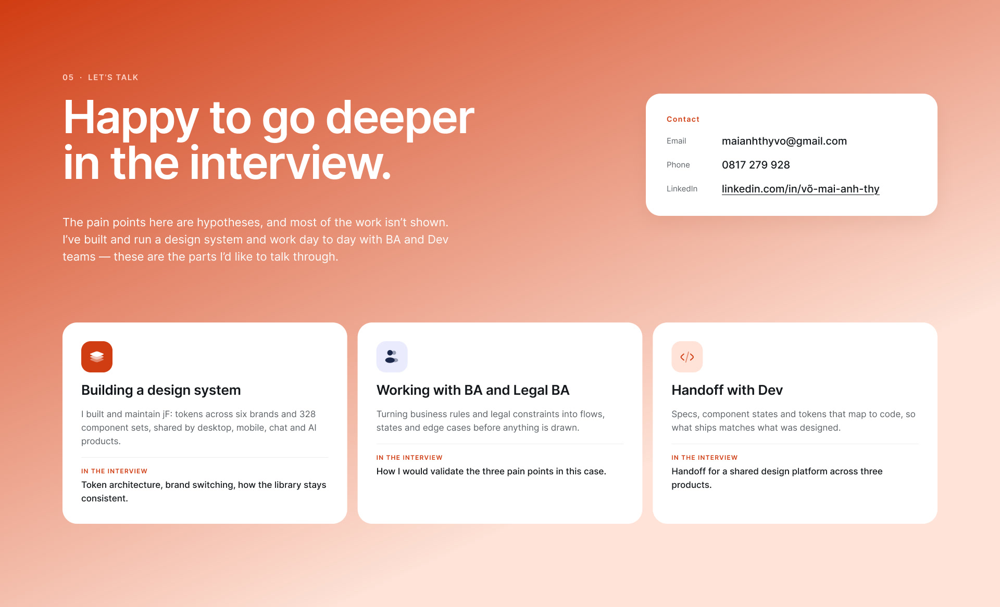

How people hand legal work to AI — and how they check it before they trust it.
THƯ VIỆN PHÁP LUẬT is building a Legal AI ecosystem in three tiers: Legal Intelligence (retrieve the right legal basis), Legal AI (reason and write a full answer, embedded in clients’ software) and AI Workspace (the finished product for end users) — all on one shared design foundation.
I wanted to understand that problem before applying, so I designed the shared layer myself: how citations, validity status, AI states, risk warnings and hand-off to a human look the same across all three tiers.
Every screen and component hangs off six steps a user goes through when they give legal work to AI:
| Who | Job | Pain point |
|---|---|---|
| In-house legal officer | Answer “can we do this?” and explain the basis to management. | Not sure the article they found is still in force. |
| Lawyer | Handle many requests in parallel with evidence. | Can’t see which request is urgent or where AI got stuck. |
| Citizens & SME owners | Know what to do next about their own situation. | Can’t name the legal term for what’s happening to them. |
Built from desk research and the job description. These are hypotheses, not validated findings — see “What I’d do next”.
I compared the existing Vietnamese legal AI tools (Bộ Tư pháp’s AI Pháp luật, LuatVietnam’s AI Luật and TVPL today) on coverage, pricing, how validity status is shown and whether there is any path to a human. None showed validity status next to the answer, and none offered a human escalation path in the flow.
Outside legal, I borrowed from products where trust is the whole UX: bank transfer confirmations (verify before you commit), the HTTPS padlock (one glance, one tap for detail) and e-signature certificates (responsibility tied to a named person and a timestamp).
The three pain points above are assumptions. Before building anything, I’d spend a week with BA and Legal BA to check them against real cases, then run usability tests on the ask → verify → escalate flow with lawyers and in-house legal staff.





